01目次
はじめに
第1章: ChatGPTで副業を始める前に知っておくべき基礎知識
ChatGPT副業の現実――過大な期待と正しい期待のバランス
ChatGPTが副業に強い理由
「AIが書いた文章」では稼げない理由
副業に必要な準備は驚くほど少ない
初心者が最初に選ぶべき副業とは
副業における心構え：3つの黄金ルール
第2章: 最短で稼げる！AIライティング副業の完全手順
なぜライティングが「最初の副業」として最強なのか
STEP 1: クラウドソーシングサイトへの登録
STEP 2: 最初に応募する案件の選び方
STEP 3: ChatGPTを使ったライティングの実際の手順
STEP 4: 単価を上げるための「実績の積み上げ方」
STEP 5: 月5万円を目指すための計算式
第3章: SNS運用代行で月3万円の安定収入を作る方法
SNS運用代行が「安定収入の柱」になる理由
SNS運用代行とは何か
ChatGPTを使ったSNS投稿作成の実際
SNS運用代行の仕事の取り方
月3万円の安定収入を作るロードマップ
第4章: AI画像生成・電子書籍出版で収益を多角化する
「ストック型収入」という考え方
AI画像販売：一度作れば何度でも売れる
電子書籍出版：専門知識をお金に変える
プロンプト販売：ChatGPT活用スキルを商品化する
第5章: 月5万円を達成する時間管理とスケールアップ戦略
本業と副業の両立を可能にする時間管理術
時間を作り出す3つの戦略
月5万円達成後のスケールアップ戦略
失敗しないための最終チェックリスト
おわりに
はじめに
あなたは今、こんなことを考えていませんか？
「ChatGPTで稼げると聞いたけど、本当に初心者でもできるの？」「副業に興味はあるけど、何から始めればいいかわからない」「月5万円くらい稼げれば、生活がずいぶん楽になるのに」
この本は、そんなあなたのために書きました。
結論から言いましょう。
**ChatGPTを正しく活用すれば、初心者でも3〜6ヶ月で月5万円を稼ぐことは十分可能です。
**
ただし、魔法のようにすぐ稼げるわけではありません。
インターネット上には「AIで完全放置で月100万円！」という誇大広告が溢れていますが、現実はそれほど甘くない。
この本でお伝えするのは、現実的かつ再現性の高い方法です。
実際に月5万円を達成した人たちの事例をもとに、何をすれば稼げて、何をしても稼げないのかを正直にお伝えします。
本書は5つの章で構成されています。
第1章では、ChatGPT副業の基礎知識と成功するための考え方をお伝えします。
第2章では、最も早く収益化できる「AIライティング副業」の具体的な手順を解説します。
第3章では「SNS運用代行」で安定した月収を作る方法を紹介します。
第4章では「AI画像販売」と「電子書籍出版」で収益を多角化する方法を解説します。
第5章では、月5万円を達成し、さらにスケールアップするための戦略をお伝えします。
本業を持ちながら副業に取り組む方も、完全な初心者の方も、この本を読み終えたとき、「よし、明日から始めよう」と思えるはずです。
**さあ、ChatGPTで新しい収入の柱を作りましょう。
**
02第1章: ChatGPTで副業を始める前に知っておくべき基礎知識
第1章: ChatGPT副業の基礎知識
ChatGPT副業の現実――過大な期待と正しい期待のバランス
まず、ChatGPT副業の「現実」をお伝えすることから始めましょう。
インターネットを検索すると、「AIで月100万円！」「完全自動で稼ぐ！」という情報が山ほど出てきます。
これらの多くは誇張であり、初心者がいきなりそのような収入を得ることはほぼ不可能です。
しかし、現実的な目標である月5万円は、正しい方法で取り組めば初心者でも達成可能です。
実際に副業を始めた人たちの平均的な成長曲線はこうなっています。
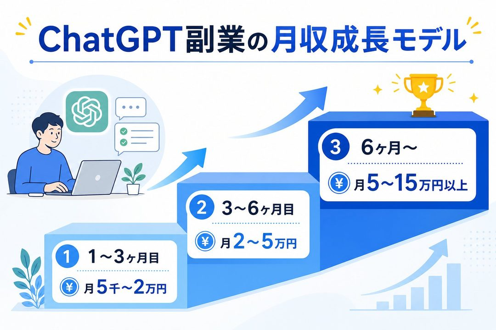
ChatGPT副業の月収成長モデル
1〜3ヶ月目: 月5,000〜20,000円。
案件の取り方を覚え、プロンプトスキルを磨く期間。
3〜6ヶ月目: 月20,000〜50,000円。
実績が積み上がり、単価が上がる時期。
リピーターも増え始める。
6ヶ月〜1年: 月5万〜15万円以上。
得意分野が確立し、高単価案件が取れるようになる。
この成長曲線を知っておくことで、始めたばかりの時期に「全然稼げない……」と挫折することを防げます。
ChatGPTが副業に強い理由
ChatGPTは「文章を書く」「アイデアを出す」「情報を整理する」という作業を飛躍的にスピードアップさせてくれます。
従来、ライター業で1記事2時間かかっていた作業が、ChatGPTを使いこなせば30〜45分で完成させられます。
時給換算すると、3〜4倍の生産性向上が可能です。
これが、ChatGPTが副業ツールとして強力な理由です。
「AIが書いた文章」では稼げない理由
ここで多くの初心者がつまずきます。
「ChatGPTに全部書いてもらえばいいじゃないか」と思うかもしれませんが、**AIが出力したままの文章を納品しても、クライアントには通用しません。
**
理由は3つあります。
1つ目は品質の問題です。
ChatGPTは情報をもっともらしく並べますが、事実確認（ファクトチェック）を自分では行いません。
誤った情報が含まれることがあり、そのまま納品するとクライアントの信頼を失います。
2つ目はオリジナリティの欠如です。
ChatGPTが書く文章は、多くの人が似たような指示を出せば似たような結果になります。
読者の心に響く「個性」がありません。
3つ目は規約違反のリスクです。
クラウドソーシングの案件には「AI生成文章の使用禁止」と明記されているものがあります。
これを守らずに納品するとアカウント停止になる可能性があります。
正しいChatGPTの使い方は「助手として使う」ことです。
構成案を作ってもらう、キーワードを洗い出してもらう、ドラフトを書いてもらって人間がリライトする。
このような使い方が正解です。
ChatGPT活用の正しい方法
副業に必要な準備は驚くほど少ない
「ChatGPT副業を始めるには何が必要？」と聞かれたら、答えはパソコンとインターネット回線だけです。
ChatGPTの無料プランで始められます。
有料プランのChatGPT Plus（月額3,000円前後）はより高性能なモデルが使えますが、最初は無料で十分です。
クラウドソーシングサイト（クラウドワークス・ランサーズ）も無料で登録できます。
初期投資ゼロで始められるのが、ChatGPT副業の大きな強みです。
初心者が最初に選ぶべき副業とは
副業には様々な種類がありますが、初心者には以下の順番でチャレンジすることをおすすめします。
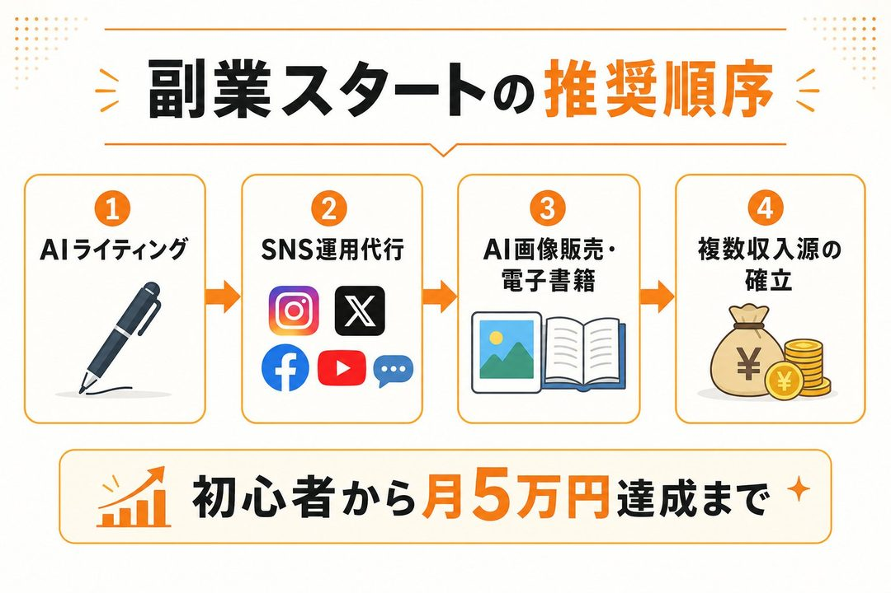
副業スタートの推奨順序
①AIライティング（最初の1〜3ヶ月）: 最も案件が多く、すぐに稼ぎ始められる。
スキル習得とお金が同時に手に入る。
②SNS運用代行（3〜6ヶ月）: ライティングスキルが活きる。
継続案件になりやすく安定収入につながる。
③AI画像販売・電子書籍（並行して）: 一度作れば繰り返し収入が入る「ストック型収入」。
④複数収入源の確立（6ヶ月以降）: 3つの収入源が揃えば、月5万円は安定的に達成できる。
この本では、この順番に従って各章で詳しく解説していきます。
副業における心構え：3つの黄金ルール
長年ChatGPT副業を研究してきた専門家たちが口を揃えて言う「成功の3つのルール」があります。
ルール1: 最初の3ヶ月は「稼ぐより学ぶ」マインドで
最初の3ヶ月で稼げる金額はたかが知れています。
それよりも、「どんな案件があるか」「クライアントが何を求めているか」「自分の得意分野は何か」を学ぶ期間と考えましょう。
ルール2: 自分の専門知識を武器にする
ChatGPT副業で成功している人は、「AIの使い方が上手い人」ではありません。
「自分の専門知識×AI」で他の人が作れないものを作れる人です。
あなたが今まで培ってきた知識・経験・仕事のスキルは、ChatGPT副業での最大の武器になります。
ルール3: 一つのことに集中する
最初から「ライティングもSNS代行も画像販売も全部やる！」と広げすぎると、どれも中途半端になります。
最初の3ヶ月はライティングだけに集中することで、スキルと実績が最速で積み上がります。
まとめ
この章では、ChatGPT副業の基礎知識をお伝えしました。
月5万円は現実的な目標であり、正しい方法で取り組めば初心者でも達成できます。
ChatGPTは「助手」として使い、自分の専門知識を組み合わせることが成功の鍵です。
初期投資はほぼゼロで、まずはライティングから始めるのが最短ルートです。
次の章では、最も早く収益化できる「AIライティング副業」の具体的な手順を徹底的に解説します。
03第2章: 最短で稼げる！AIライティング副業の完全手順
第2章: AIライティング副業の完全手順
なぜライティングが「最初の副業」として最強なのか
ChatGPT副業の種類は様々ありますが、初心者に最もおすすめするのがAIライティング副業です。
その理由は明確です。
案件数が圧倒的に多い。
クラウドワークス・ランサーズを見ると、ライティング関係の案件は常時数万件以上掲載されています。
他の副業と比べて、仕事を見つけやすい環境が整っています。
今日登録して今日応募できる。
特別な資格も経験も必要ありません。
アカウントを作ってプロフィールを書けば、その日のうちに案件に応募できます。
ChatGPTとの相性が抜群。
文章を書くという作業は、ChatGPTが最も得意とする分野です。
適切に使いこなせば、作業効率が劇的に向上します。
では、具体的にどう進めればいいのかを、ステップバイステップで解説します。
STEP 1: クラウドソーシングサイトへの登録
まず、以下の2つのサイトに登録しましょう。
クラウドワークス（crowdworks.jp）: 国内最大のクラウドソーシングサイト。
ライティング案件が豊富で、初心者向けの低単価案件も多い。
ランサーズ（lancers.jp）: クラウドワークスと並ぶ大手サイト。
やや専門性の高い案件が多く、実績がついてくると単価が上がりやすい。
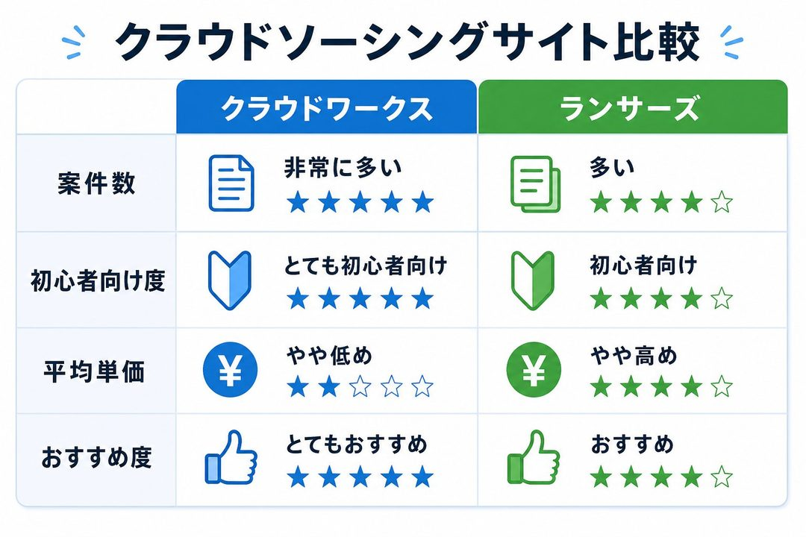
クラウドソーシングサイト比較
プロフィールの記入は非常に重要です。
「どんな分野が得意か」「どんな経験があるか」「どんな文章が書けるか」を具体的に書きましょう。
**プロフィールを充実させるだけで、案件獲得率が2〜3倍変わります。
**
STEP 2: 最初に応募する案件の選び方
初心者がよくやる失敗が「高単価案件にいきなり応募する」ことです。
最初は単価よりも「実績」を優先してください。
最初の5〜10件は、1記事1,000〜3,000円の案件から始めましょう。
実績をゼロから積み上げる「投資期間」と考えてください。
案件選びのポイントは3つです。
①自分が詳しいジャンルを選ぶ: 料理が好きな人はグルメ記事、旅行が趣味の人は旅行記事、本業がIT系なら技術系記事。
知識があるジャンルは品質が上がりやすく、ChatGPTも使いやすい。
②AI使用可否を確認する: 案件説明にはAIツールの使用可否が記載されていることがあります。
「AI使用OK」「ChatGPT使用可」と書かれた案件を選ぶと安心です。
③納期に余裕がある案件を選ぶ: 最初は作業時間の見積もりが難しいため、納期が1週間以上ある案件を選ぶと安心です。
STEP 3: ChatGPTを使ったライティングの実際の手順
では、実際にどうやって記事を書くのかを解説します。
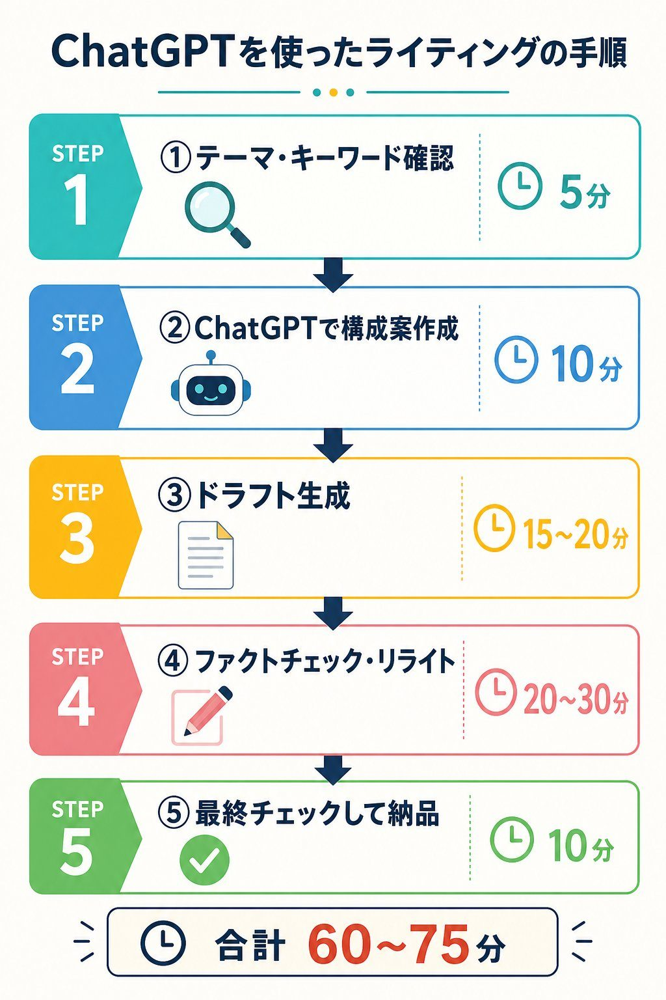
ChatGPTを使ったライティングの手順
①テーマ・キーワードの確認（5分）
クライアントから渡されたテーマやキーワードを確認します。
「どんな読者向けか」「何を伝えたいのか」を理解することが最初のステップです。
②ChatGPTで構成案を作成（10分）
ChatGPTに以下のようなプロンプトを入力します。
「SEO記事の構成案を作ってください。
キーワード：[キーワード]、読者ターゲット：[ターゲット]、記事の目的：[目的]、文字数：[文字数]」
ChatGPTが提案する構成案を見て、自分なりに修正・改善してから使います。
そのままコピーするのではなく、「なぜこの構成がいいのか」を考えながら調整することが大切です。
③ドラフトの生成（15〜20分）
構成案の各セクションについて、ChatGPTに文章を書いてもらいます。
「以下のセクションの文章を書いてください。
[セクション名]：[具体的な内容の指示]」
複数回に分けて生成することで、一度に全部書くより質が高くなります。
④ファクトチェックとリライト（20〜30分）
ここが最も重要なステップです。
ChatGPTが書いた文章を一文一文確認し、事実関係が正しいかチェックします。
特に数字、固有名詞、日付などは必ず確認してください。
そして、自分の言葉でリライトします。
ChatGPTの文章に「自分の体験」「自分の視点」「読者への共感」を加えることで、オリジナリティが生まれます。
⑤最終チェックと納品（10分）
誤字脱字、文字数、フォーマットの確認をして納品します。
**合計作業時間: 60〜75分で1記事完成。
**
従来のライティングより時間が半分以下になります。
STEP 4: 単価を上げるための「実績の積み上げ方」
最初は低単価でも、実績を積めば確実に単価を上げられます。
実績10件までの戦略:
実績ゼロの段階では、まずクライアントに「この人は信頼できる」と思ってもらうことが最優先です。
- 締め切りを必ず守る（これだけで上位20%に入れる）
- 納品前に「読みやすさ・わかりやすさ」を自分で10回音読してチェックする
- 納品メッセージに「気になる点があればお気軽にご連絡ください」と加える
- 納品後にクライアントからのフィードバックをもとに改善する
これを10件繰り返せば、プロフィールに「実績10件・評価★4.8」などがつき、応募時の説得力が格段に上がります。
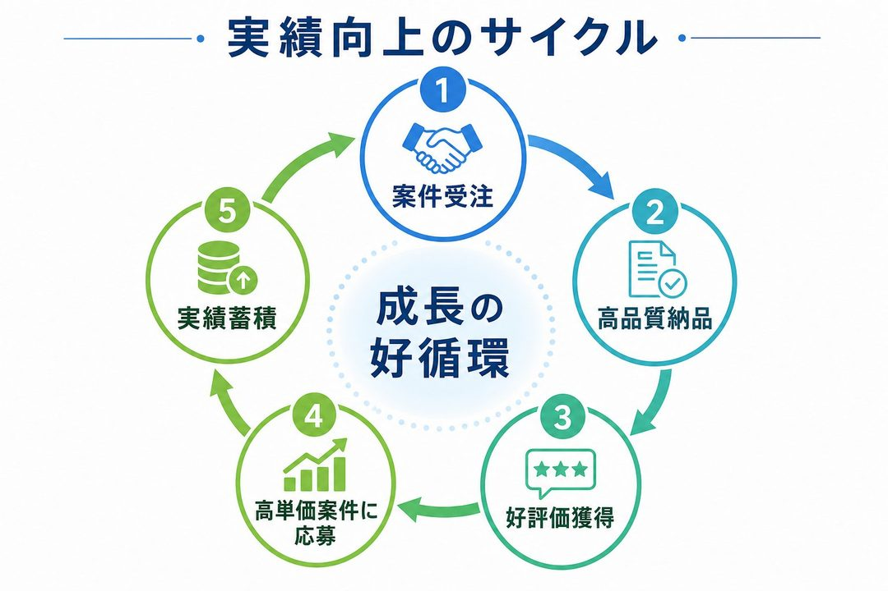
実績向上のサイクル
実績10件以降の戦略:
実績が10件以上ついたら、単価を1.5〜2倍に上げた案件への応募を始めます。
また、「継続依頼」を意識した営業も始めましょう。
1回の依頼ではなく、月定額で「月に○本の記事を担当する」という継続契約を獲得できれば、安定収入につながります。
STEP 5: 月5万円を目指すための計算式
具体的な数字で月5万円を逆算してみましょう。
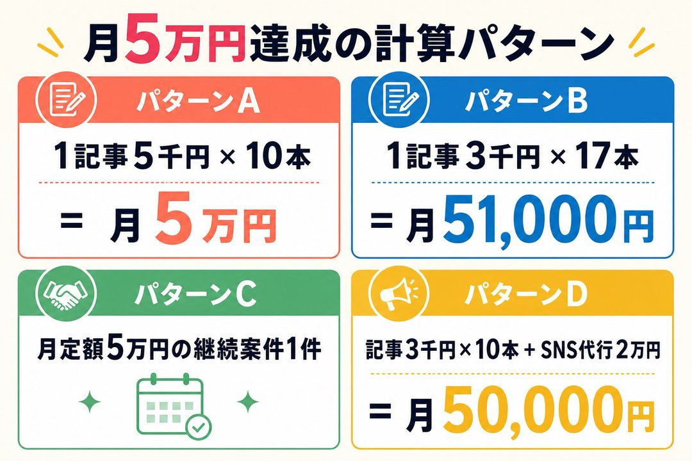
月5万円達成の計算パターン
パターンA: 1記事5,000円 × 10本 = 月5万円（週2〜3本ペース）
パターンB: 1記事3,000円 × 17本 = 月51,000円（週4本ペース）
パターンC: 月定額5万円の継続案件1件を獲得する
パターンD: 記事3,000円 × 10本 + SNS運用代行20,000円 = 月50,000円
最初は単価が低くても、3〜6ヶ月で確実に達成できます。
ライティング副業でよくある失敗と回避策
失敗1: 納期遅延
解決策: 案件受注時に「自分が思う完成時間の1.5倍」を納期として設定する。
失敗2: AI生成をそのまま納品してバレる
解決策: 必ず人間がリライトする。
AIチェックツール（AI Detector等）で確認する習慣をつける。
失敗3: 単価交渉ができない
解決策: 実績10件以上たまったら、「こんな実績があります」と根拠を持って単価交渉する。
感情的にならず、数字で話す。
失敗4: 特定のクライアントに依存しすぎる
解決策: 常に複数の案件を並行して受注する。
1社からの収入が月収の50%を超えないようにする。
まとめ
この章では、AIライティング副業の具体的な手順をお伝えしました。
クラウドソーシングサイトへの登録から案件選び、ChatGPTを使った効率的な執筆方法、実績の積み上げ方まで、すべての手順が揃いました。
**月5万円は「1記事5,000円×10本」で達成できます。
**最初の3ヶ月は学びながら稼ぐ期間と位置づけ、着実に実績を積み上げましょう。
次の章では、ライティングと並行して始めたい「SNS運用代行」で安定した月収を作る方法をお伝えします。
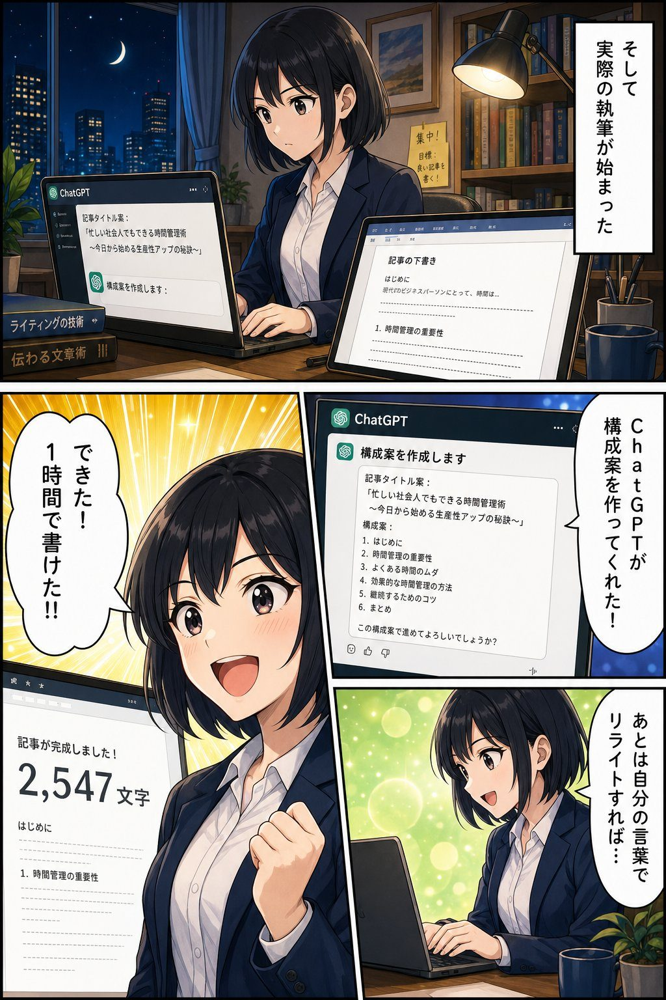
04第3章: SNS運用代行で月3万円の安定収入を作る方法
第3章: SNS運用代行で安定収入
SNS運用代行が「安定収入の柱」になる理由
ライティング副業は「1件ごとに稼ぐ」スタイルです。
毎月新しい案件を取り続けなければなりません。
一方、SNS運用代行は継続契約が基本です。
一度クライアントを獲得すれば、毎月安定した収入が入ってきます。
これが、SNS運用代行を「安定収入の柱」として位置づける理由です。
SNS運用代行とは何か
企業や個人事業主のSNSアカウント（Instagram、X（旧Twitter）、Facebook等）の運用を代わりに行う仕事です。
具体的な業務内容はクライアントによって異なりますが、一般的には以下のようなものがあります。
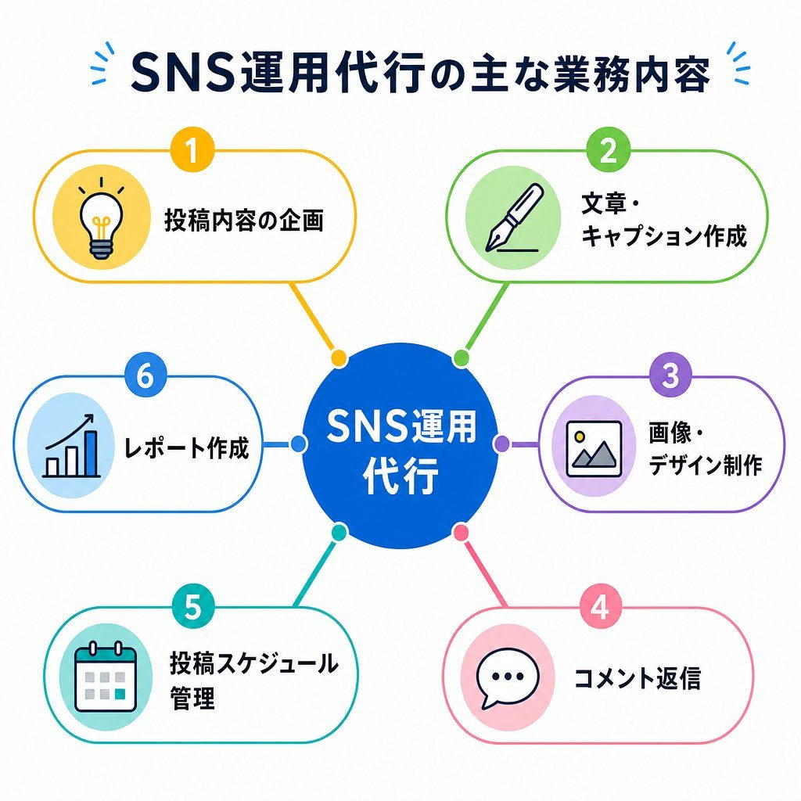
SNS運用代行の主な業務内容
投稿コンテンツの企画・制作: 毎週・毎月の投稿内容を企画し、文章と画像を作成します。
これはChatGPTが最も力を発揮できる部分です。
スケジュール管理・投稿: 作成したコンテンツを決まった時間に投稿します。
コメント・DM対応: フォロワーからのコメントやDMに返信します。
レポート作成: フォロワー数・いいね数・リーチ数などの分析レポートを作成します。
SNS運用代行の単価相場
月額料金の相場は以下の通りです。
初心者・実績なし: 月1万〜3万円
実績3ヶ月以上: 月3万〜7万円
実績1年以上・高成果: 月5万〜15万円以上
月3万円の案件を2件獲得できれば、それだけで月6万円の安定収入になります。
ChatGPTを使ったSNS投稿作成の実際
では、具体的にどうやってSNS投稿を作るのかを解説します。
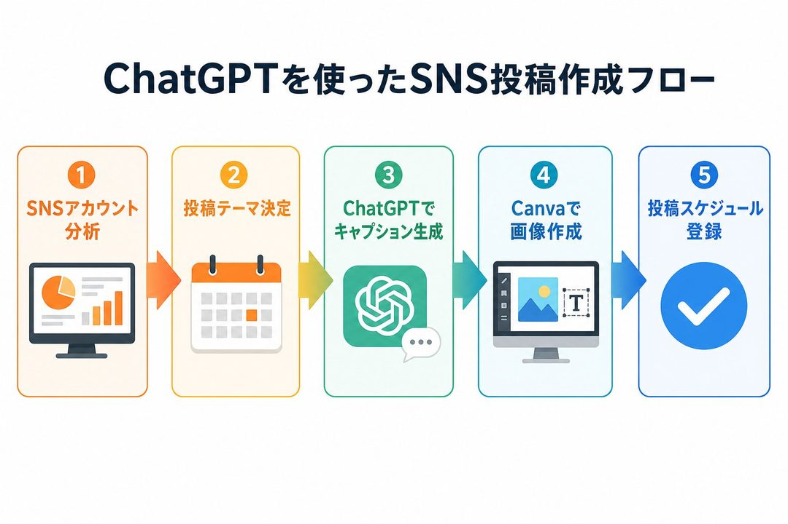
ChatGPTを使ったSNS投稿作成フロー
①クライアントのSNSアカウントを分析する
過去の投稿でいいね数が多いもの・少ないものを比較し、「このアカウントはどんな投稿が受けるか」を分析します。
②月間の投稿テーマを決める
月に12〜16投稿分のテーマを先に決めてしまいます。
ChatGPTに「このアカウントの月間投稿計画を作ってください」と依頼すると、効率よくテーマリストが作れます。
③ChatGPTでキャプションを生成する
テーマが決まったら、ChatGPTにキャプション（投稿文）を書いてもらいます。
プロンプト例：「Instagram用のキャプションを書いてください。
アカウントのジャンル：[ジャンル]、投稿テーマ：[テーマ]、ターゲット：[ターゲット]、文字数：200〜300字、ハッシュタグ：5〜10個」
生成されたキャプションをそのまま使うのではなく、クライアントのブランドトーン（話し方・雰囲気）に合わせてリライトします。
④Canvaで画像を作成する
Canvaという無料のデザインツールを使えば、プロ品質の画像が簡単に作れます。
ChatGPTに「このキャプションに合う画像のデザインアイデアを3つ提案して」と聞けば、デザインのヒントも得られます。
⑤投稿スケジュールを管理する
Metaビジネススイート（Instagram・Facebook用）やBuffer（X用）などのツールを使えば、投稿を事前に予約できます。
SNS運用代行の仕事の取り方
SNS運用代行の案件を獲得する方法は主に3つあります。
方法1: クラウドソーシング
クラウドワークス・ランサーズで「SNS運用代行」「Instagram運用」などで検索すると案件が見つかります。
初心者でも応募できる案件があります。
方法2: 自分のSNSを使った営業
これが中長期的に最も効果的な方法です。
まず自分のXやInstagramを運営し、「SNS運用代行のプロ」として発信します。
「今日ChatGPTを使ってInstagramのキャプションを作りました」「SNS運用で大切な3つのポイント」などの有益な情報を発信し続けます。
フォロワーが増えてきたところで、「SNS運用代行の依頼はDMへ」と告知すると、自然に仕事が来るようになります。
方法3: 知人・地域の中小企業への営業
「SNSを更新したいけど時間がない」という中小企業・個人事業主は多数存在します。
知人のつながりや地域の経営者交流会などで「月2万円でSNS更新を全部やります」と提案してみましょう。
最初の1件さえ獲得できれば、実績として次の案件に活かせます。
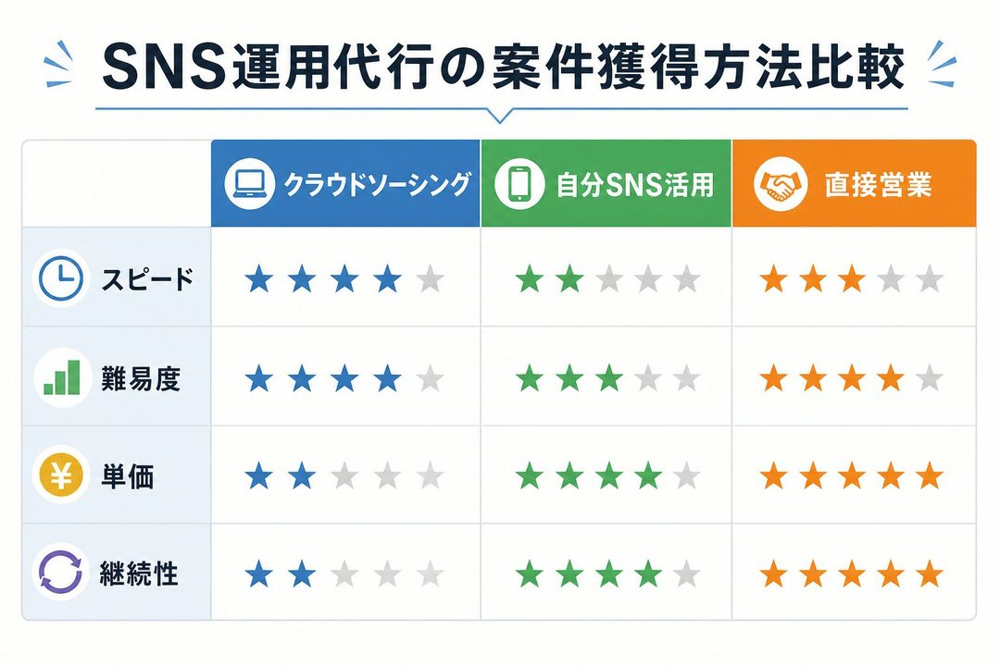
SNS運用代行の案件獲得方法比較
月3万円の安定収入を作るロードマップ
具体的なステップで月3万円達成までを解説します。
1ヶ月目（準備・実績0→1）
- クラウドワークスで月1万円の案件を1件受注する
- 自分のInstagramまたはXで「SNS運用代行」の発信を開始する
- Canvaの基本操作を習得する
2〜3ヶ月目（実績1→3・単価アップ）
- 月1〜2万円の案件を2〜3件受注する
- 初回クライアントの継続更新率を高める（品質と信頼関係が鍵）
- 自分SNSのフォロワーを増やし、問い合わせ窓口を整備する
4〜6ヶ月目（月3万円達成）
- 月3万円の案件を1件、または月1.5万円の案件を2件獲得する
- 継続案件が2件以上確保できれば、月3万円が安定する
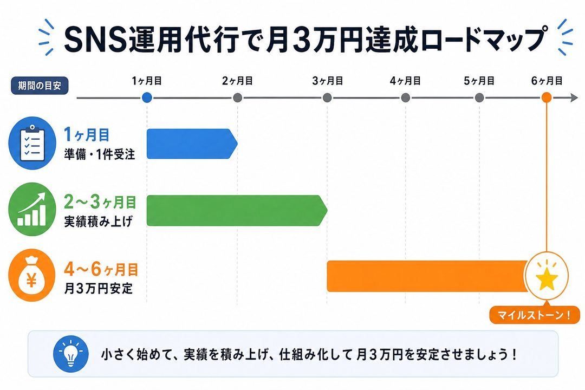
SNS運用代行で月3万円達成ロードマップ
ChatGPTを使ったSNS運用の生産性を3倍にする方法
慣れてくると、1クライアント分のSNS運用（月12投稿分）を週1〜2時間の作業で完了できるようになります。
ポイントは「テンプレート化」です。
投稿フォーマットのテンプレート作成: 毎回ゼロから考えるのではなく、「月曜日は豆知識投稿」「水曜日はお客様の声」「金曜日はサービス告知」のように投稿パターンを固定化します。
月末に翌月分を一気に作る: 月末に翌月の全投稿をまとめて作成し、予約投稿するサイクルを確立します。
1クライアント分を1〜2時間で完成させられます。
プロンプトの再利用: 一度うまくいったプロンプトはメモしておき、翌月も使い回します。
時間が経つにつれ、自分だけの「最強プロンプト集」が蓄積されます。
まとめ
この章では、SNS運用代行で月3万円の安定収入を作る方法をお伝えしました。
SNS運用代行の強みは「継続収入」です。
1件獲得すれば毎月安定した収入が入り、ライティング副業と組み合わせることで月5万円達成がぐっと近づきます。
次の章では、一度作れば繰り返し収入が入る「AI画像販売」と「電子書籍出版」で収益を多角化する方法を解説します。
05第4章: AI画像生成・電子書籍出版で収益を多角化する
第4章: AI画像販売・電子書籍で多角化
「ストック型収入」という考え方
ライティングやSNS運用代行は、働いた時間に対して報酬が発生する「フロー型収入」です。
これに対して「ストック型収入」は、一度作ったコンテンツが繰り返し収入を生み続けます。
AI画像販売や電子書籍出版がその代表例です。
月5万円という目標を安定的に達成するには、フロー型収入だけでなくストック型収入も組み合わせることが重要です。
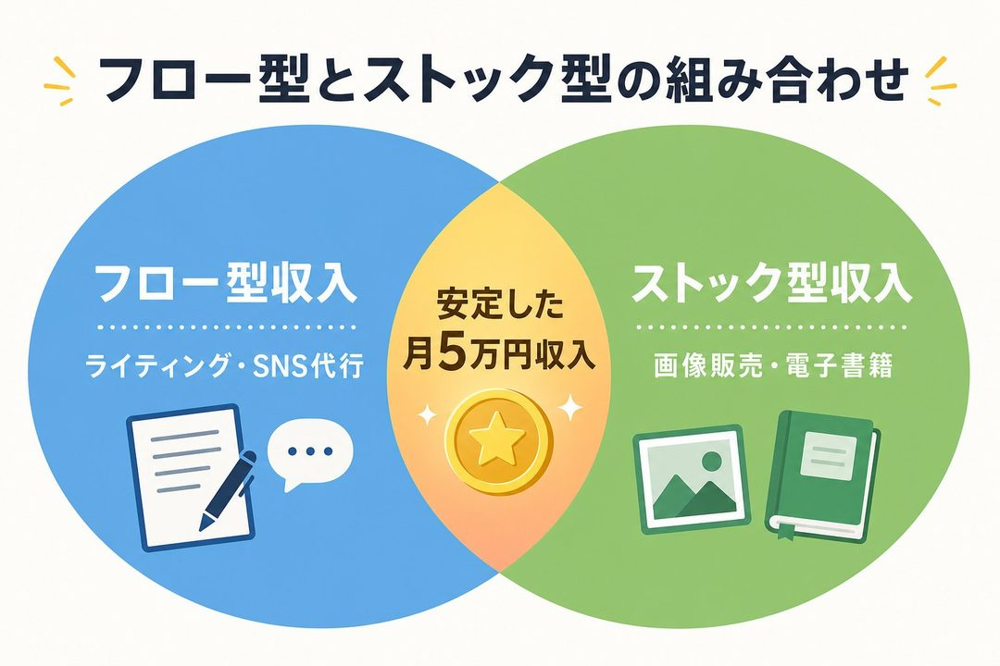
フロー型vsストック型収入の組み合わせ
AI画像販売：一度作れば何度でも売れる
AI画像販売の仕組み
ChatGPTやDALL-E、Midjourneyなどを使って生成した画像を、ストックフォトサイトに登録して販売します。
一度登録した画像が売れるたびに収入（ロイヤリティ）が発生します。
1枚あたりの単価は数円〜数百円と小さいですが、1,000枚登録すれば月に1万〜5万円を稼ぐことも可能です。
おすすめのストックフォトサイト
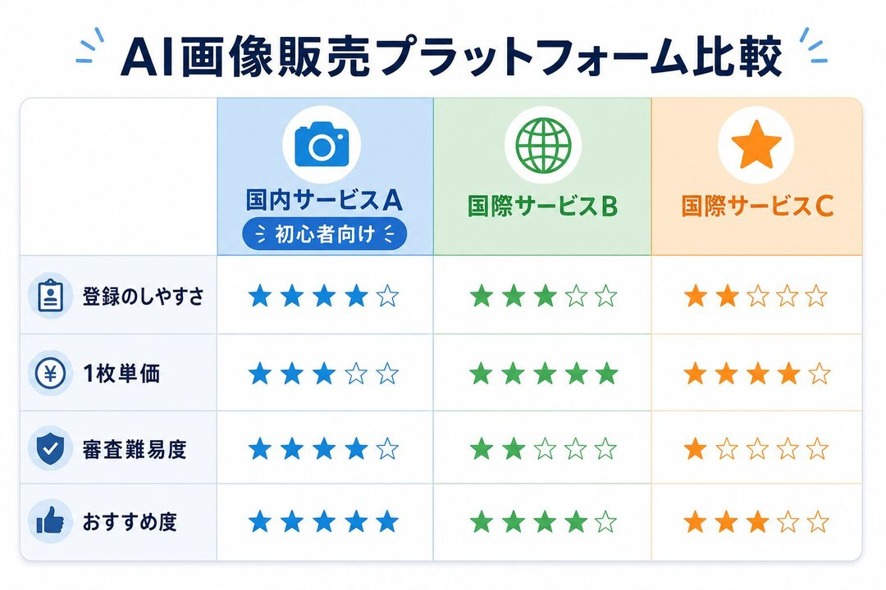
AI画像販売プラットフォーム比較
PIXTA（ピクスタ）: 国内最大のストックフォトサイト。
1枚あたり180〜550円と単価が高め。
日本語インターフェースで使いやすい。
AI生成画像の登録も条件付きで可能。
Adobe Stock: 世界規模のストックサービス。
1ダウンロードあたり33セント〜。
登録画像がAdobe製品ユーザーに使われるため、露出が大きい。
Shutterstock: 世界的に有名なストックサービス。
ダウンロードごとに0.25〜1.88ドルのロイヤリティ。
AI画像販売で稼ぐためのポイント
需要のある画像を作る: 「ビジネスシーン」「日本人モデル」「自然・風景」「食べ物」などは需要が高い。
ChatGPTに「今ストックフォトで売れている画像ジャンルを教えて」と聞いて最新動向を掴みましょう。
キーワードを丁寧に設定する: 登録時に適切なキーワードを設定しないと、いくら良い画像を作っても見つけてもらえません。
ChatGPTに「この画像に適したキーワードを20個提案して」と依頼するのが効率的です。
量が正義: 最初は1枚あたりの売上が少なくても、登録枚数を増やすことで収入が増えます。
週に20〜30枚ずつコンスタントに登録し続けることが大切です。
電子書籍出版：専門知識をお金に変える
なぜKindleで出版するのか
Kindle（Amazonの電子書籍サービス）は、個人でも無料で出版でき、印税が35〜70%と非常に高い収益モデルです。
1冊300〜600円で販売し、印税70%なら1冊あたり210〜420円が入ります。
月に100冊売れれば月2〜4万円の収入です。
そして、**ChatGPTを使えば電子書籍の原稿作成が劇的に速くなります。
**
ChatGPTを使った電子書籍出版フロー
売れる電子書籍のテーマ選び
Kindleで売れるジャンルは以下の通りです。
「具体的なハウツー本」: 「〇〇を3ヶ月で習得する方法」「初心者でも失敗しない〇〇入門」のような実践的な内容が売れます。
「自分の専門知識・経験を活かした本」: 本業で培ったスキルや経験を書いた本は、他の人が真似できない独自コンテンツになります。
「ニッチなジャンル」: 競合が少ないニッチなジャンルは、検索順位が上がりやすく長期的に売れ続けます。
「悩み解決型の本」: 読者の悩みを解決する本は購入意欲が高い。
ChatGPTを使った原稿作成の実際
原稿を書く前に、ChatGPTに「この本のターゲット読者が抱えている最大の悩みを5つ教えて」「競合書籍との差別化ポイントを考えて」と聞くことで、売れる本の方向性が見えてきます。
目次ができたら、各章・各節をChatGPTに書いてもらい、自分でリライトして完成させます。
25,000〜30,000字の本を1〜2週間で完成させることも可能です。
Kindleへの出版手順
1. Kindle Direct Publishing（KDP）にアカウント登録（無料）
2. 原稿をWord形式で作成
3. KDPの管理画面から本を登録（タイトル・説明文・カバー画像・価格を設定）
4. 審査通過後（通常24〜48時間）に出版完了
カバー画像はCanvaで無料作成できます。
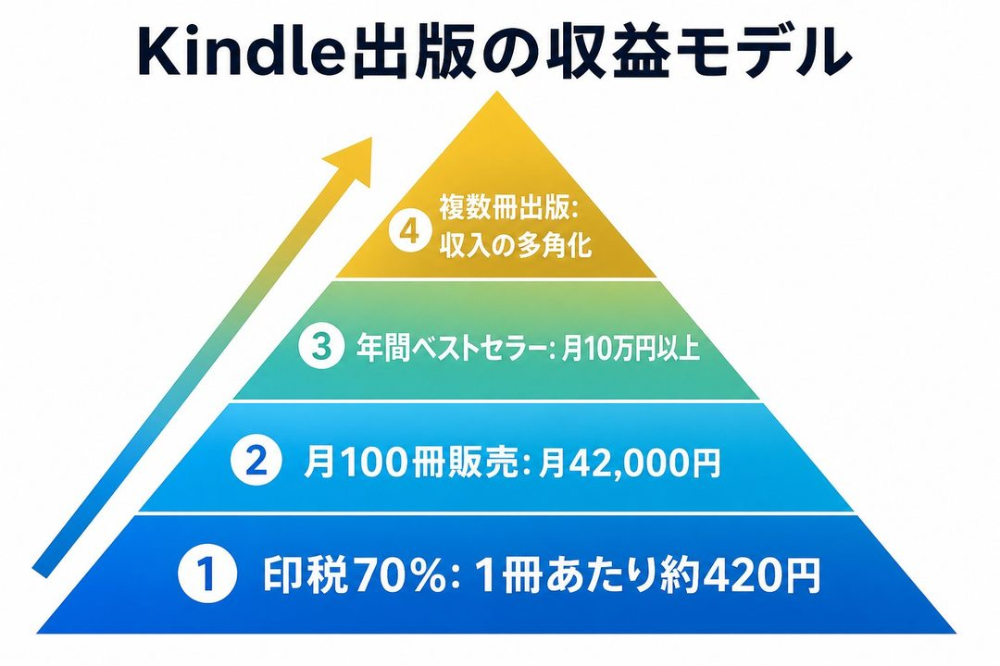
Kindle出版の収益モデル
Kindleで売れ続けるためのマーケティング
出版して放置しても売れません。
以下の施策を組み合わせましょう。
SNSでの告知: X（旧Twitter）、Instagram、noteで本の内容の一部を紹介し、購入意欲を高めます。
無料キャンペーンの活用: Kindle Unlimitedという読み放題サービスへの登録や、期間限定で無料公開することでレビューを集め、ランキングを上げます。
アマゾンの検索最適化: タイトル・説明文にターゲットが検索しそうなキーワードを入れることで、検索で見つけてもらいやすくなります。
プロンプト販売：ChatGPT活用スキルを商品化する
AIを使いこなすほど、あなたの手元には効果的なプロンプト（指示文）が蓄積されます。
これ自体を商品として販売することができます。
販売先:
- note: 1記事200〜5,000円で販売できる日本最大のコンテンツ販売プラットフォーム
- Booth（BOOTH.PM）: デジタルコンテンツ販売サービス。
プロンプト集や電子書籍を販売できる
売れるプロンプト商品の例:
「ChatGPTライティングプロンプト100選」「副業に使えるSNS投稿プロンプト集」「Kindle出版のための構成作成プロンプト」
自分が実際に使って効果があったプロンプトをまとめた「プロンプト集」は、同じ悩みを持つ人に刺さる商品になります。
まとめ
この章では、ストック型収入として「AI画像販売」「電子書籍出版」「プロンプト販売」を解説しました。
これらは「一度作ったコンテンツが繰り返し収入を生む」仕組みです。
ライティング（月2〜3万円）＋SNS運用代行（月2〜3万円）＋ストック型収入（月1〜2万円）の組み合わせで、**月5万円の安定達成が現実的になります。
**
次の最終章では、これらを組み合わせて月5万円を達成・維持するための時間管理とスケールアップ戦略を解説します。
06第5章: 月5万円を達成する時間管理とスケールアップ戦略
第5章: 月5万円達成・スケールアップ戦略
本業と副業の両立を可能にする時間管理術
多くの方が「副業を始めたいけど時間がない」という悩みを抱えています。
フルタイムで働きながら副業で月5万円を稼ぐために必要な時間は、実際にどのくらいでしょうか。
月5万円達成に必要な週間作業時間の目安:
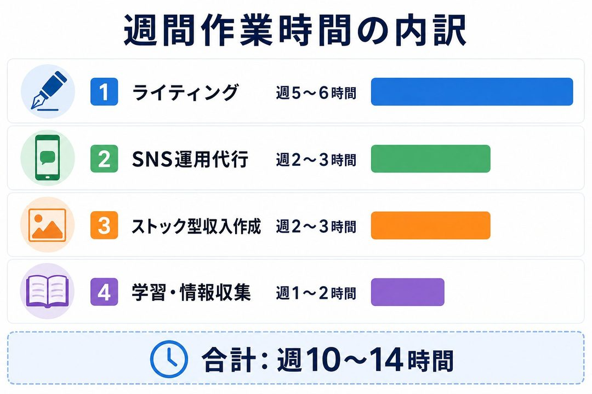
週間作業時間の内訳
ライティング副業: 週5〜6時間（1記事60〜75分 × 週4〜5本）
SNS運用代行: 週2〜3時間（月定額案件2〜3件を月末にまとめて作業）
ストック型収入: 週2〜3時間（画像生成・登録、電子書籍執筆）
学習・情報収集: 週1〜2時間（新しいプロンプト技術・トレンドのキャッチアップ）
合計: 週10〜14時間
1日あたりに換算すると、平日2時間 × 5日 = 週10時間で達成できます。
時間を作り出す3つの戦略
戦略1: 朝活で確保する（最強パターン）
副業で成功している人の多くが「朝活」を実践しています。
朝6時〜8時の2時間を副業に充てるパターンです。
朝は頭が冴えており集中力が高い。
家族や仕事の邪魔が入りにくい。
習慣化しやすい。
これらの理由から、朝活は副業時間の確保として最強の方法とされています。
戦略2: スキマ時間の徹底活用
通勤時間・昼休み・待ち時間などのスキマ時間をうまく活用しましょう。
スマートフォンでChatGPTを使って記事の構成案を考える、SNS投稿のアイデアをメモする、画像生成のプロンプトを考えるなど、まとまった時間がなくてもできる作業を細切れにこなします。
戦略3: バッチ処理で効率化する
似た作業をまとめてこなす「バッチ処理」で時間効率を高めます。
例えば、「月末の土曜日の午後は翌月のSNS投稿を全部まとめて作成する日」と決めてしまいます。
集中して作業することで、個別に作るより50%時間が短縮できます。
効率的な時間管理の3戦略
月5万円達成後のスケールアップ戦略
月5万円を達成したら、次のステージに進みましょう。
ステージ1（月3ヶ月〜）: 月5万円の安定化
まず月5万円を「たまたま達成」ではなく、「毎月安定して達成」できる状態にします。
収入源を最低3つ以上に分散させることが重要です。
1つの収入源が途切れても、他でカバーできる状態にします。
ステージ2（月6ヶ月〜）: 月10万円への道
月5万円が安定したら、単価アップと効率化で月10万円を目指します。
単価アップの方法:
- 実績ページを充実させ、より高単価の案件に応募する
- 「〇〇ジャンル専門ライター」として専門性を打ち出す
- 直接クライアントへの営業（クラウドソーシングを経由しない）に移行する
効率化の方法:
- ChatGPTへの指示をテンプレート化してさらに時間短縮
- Zapierなどの自動化ツールで定型作業を自動化
- 得意な作業に集中し、苦手な作業は外注化を検討する
収入スケールアップのステップ
ステージ3（1年以降）: 本業を超える収入の実現
月10万円以上が安定してきたら、以下の選択肢が見えてきます。
AI副業コンサルタントとして指導する: あなたの経験とノウハウを価値として提供する。
1時間5,000〜20,000円で指導できます。
自分のメディア・コミュニティを持つ: ブログ、note、YouTubeチャンネルなどで発信し、自分のファンを作る。
電子書籍・コンテンツビジネスの拡大: 書籍を10冊以上出版することで、ストック型収入が自動的に増え続ける構造を作る。
2026年のChatGPT副業でこれから重要になること
AI技術は急速に進化しています。
2026年現在、副業で生き残るために重要なことを整理しましょう。
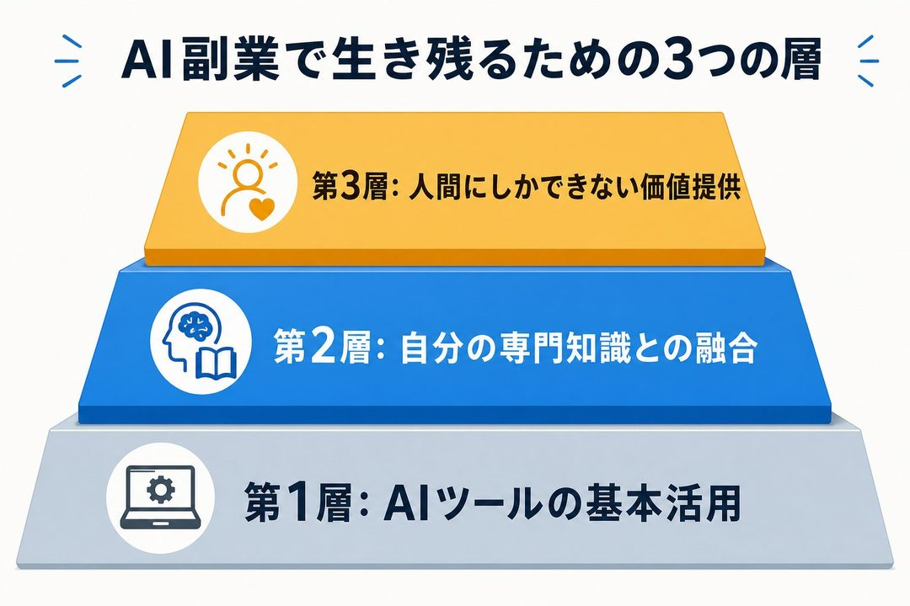
AI副業で生き残るための3つの層
第1層: AIツールの使いこなし（最低限必要）
ChatGPTはもはや「使えるのが当たり前」のツールになりつつあります。
これだけでは差別化できません。
第2層: 自分の専門知識との融合（差別化の核心）
あなたが本業で培ってきた知識・経験を、ChatGPTと組み合わせることで、誰も真似できない価値が生まれます。
医療従事者なら「医療分野のAIライティング」、教育者なら「教育コンテンツのAI作成」、料理人なら「レシピコンテンツのAI最適化」といった具合に、専門性×AIが最強の武器になります。
第3層: 人間にしかできない価値（最終的な差別化）
共感・感情的なつながり・創造性・倫理的な判断——これらはAIには難しい領域です。
クライアントとの信頼関係を築く力、読者の感情に寄り添う文章、独自の世界観やブランディング。
これらを磨くことで、AIに仕事を奪われない副業家になれます。
失敗しないための最終チェックリスト
副業を始める前に、このチェックリストを確認してください。
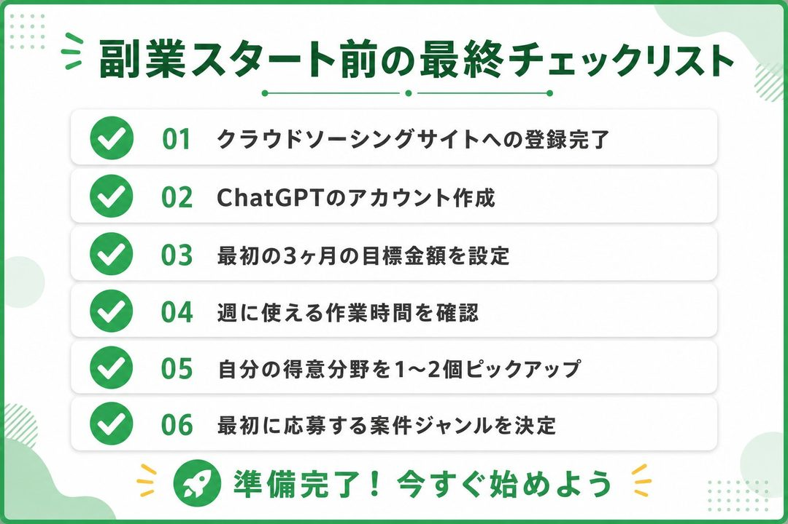
副業スタート前の最終チェックリスト
✅ クラウドワークスとランサーズに登録完了
✅ ChatGPTのアカウントを作成し、基本操作を確認
✅ 最初の3ヶ月の目標金額を設定（月1〜2万円でOK）
✅ 週に使える作業時間を明確にした（最低週5時間）
✅ 自分の得意分野・専門知識を1〜2個ピックアップ
✅ 最初に応募する案件ジャンルを1つ決めた
1つでも未チェックがある場合は、この章を読み返して確認してください。
まとめ: 月5万円達成への最短ルート
この本で学んだことを振り返りましょう。
第1章: ChatGPT副業の基礎知識と、AIは「助手」として使うという考え方を理解した。
第2章: クラウドソーシングでのライティング副業で、最初の収入を作る具体的な手順を習得した。
第3章: SNS運用代行で継続収入を作り、安定した月収の柱を構築する方法を学んだ。
第4章: AI画像販売・電子書籍出版というストック型収入で、収益を多角化する方法を理解した。
第5章: 時間管理とスケールアップ戦略で、月5万円から10万円・20万円へと発展させるロードマップを描いた。
**月5万円は、決して遠い目標ではありません。
**
今日からクラウドワークスに登録し、最初の1件に応募する——この一歩を踏み出せば、3〜6ヶ月後に必ず結果が出ます。
**ChatGPTはあなたの最強の副業パートナーです。
今すぐ、始めてください。
**
おわりに
本書を最後まで読んでいただき、ありがとうございます。
「ChatGPTで月5万円」という目標は、決して夢物語ではありません。
この本で紹介した方法——ライティング、SNS運用代行、AI画像販売、電子書籍出版——は、どれも今日から始められる具体的な手段です。
私が伝えたかった最も大切なことを、最後にもう一度お伝えします。
**ChatGPTは道具であり、あなたがその道具を動かす人間です。
**
どんなに高性能なAIが登場しても、あなたの専門知識・経験・人間性は代替できません。
それらとAIを組み合わせることで、初めて本当の価値が生まれます。
最初の3ヶ月は思うように稼げないかもしれません。
クライアントに断られる経験もするでしょう。
でも、それは全員が通る道です。
**月5万円を達成した人と達成できなかった人の違いは、たった一つ。
「続けたかどうか」です。
**
今日、この本を読んだあなたには、もう副業を始めるために必要な知識が揃っています。
あとは一歩踏み出すだけ。
**あなたの副業成功を、心から応援しています。
**
© 竹谷知悦 / 特別プレゼント版